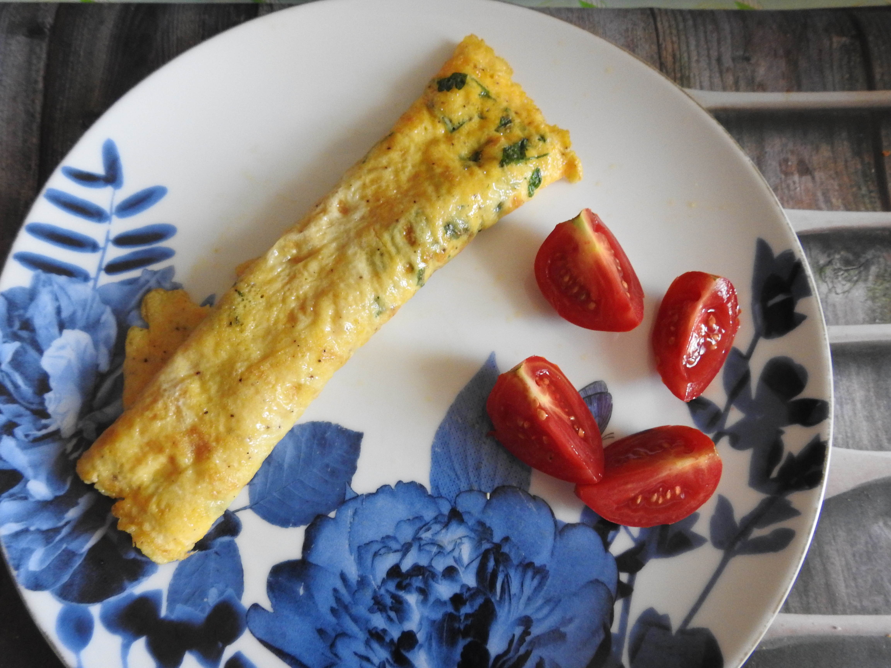

Vegetáriánus

Bazsalikomos Rakott tészta

Sajtos Brokkolis tészta
Cheezy Broccoli Pasta

Derelye

Édesburgonyás gnocchi

Fish and Chips

Fokhagymás Parmezános tészta

Gnocchi with Tomato Sauce

Gombapörkölt

Grízes tészta

Halas Curry
Fish Curry

Lepcsánka

Sajtos Makaróni
Mac Cheese

Nudli

Olaszos-tejszínes gombaszósz spagettivel
Omlett

Rántott sajt

Spaghetti Tuna & Tomato Sauce

Szilvásgombóc

Tésztasaláta

Tonhalas tészta

Túrógombóc

Túrós csusza

Vega Lasagne

Vegetáriánus curry

Zöld borsó főzelék

Tészta paprikás csirke ízű szósszal

Bableves

Brokkolikrémleves

Carrot & Coriander Soup

Édesburgonya krémleves

Fokhagymakrémleves

Gombakrémleves

Grízgombócleves

Halászlé

Karfiolleves

Kelbimbó leves

Kertészleves

Köményleves

Lebbencsleves

Minestoneleves

Paradicsomleves

Spárgakrémleves

Tarhonyaleves

Zellerkrémleves

Zöldborsóleves